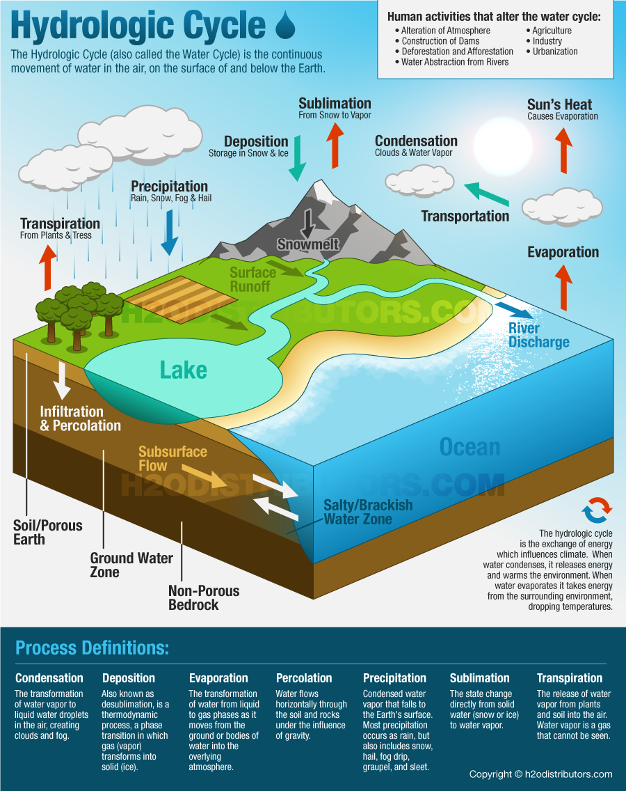
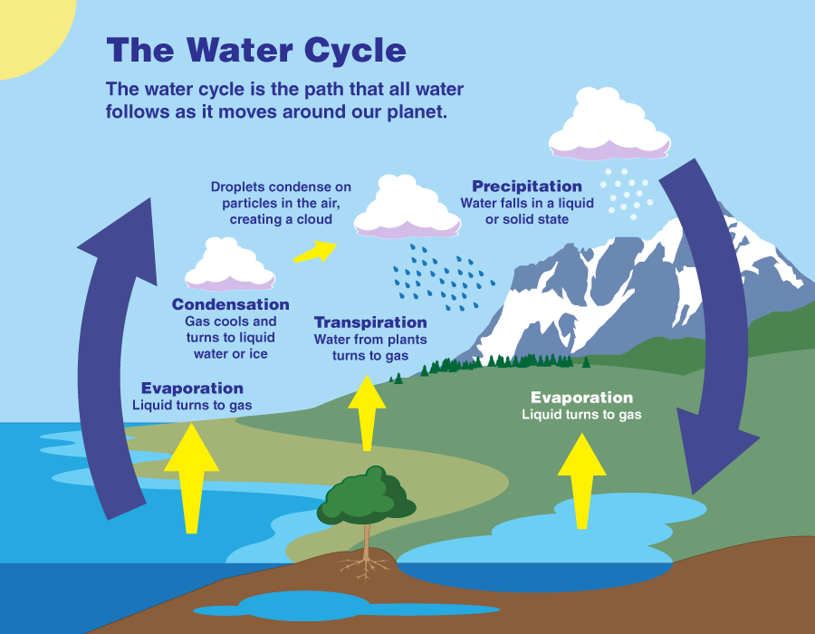
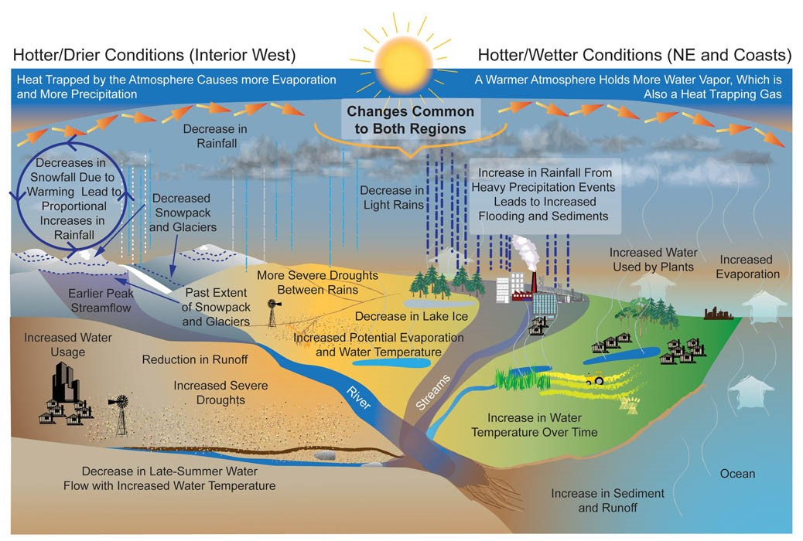

The water cycle is the infinite movement of water within Earth and the atmosphere that is in a complex process that includes fluxes are the way that water travels between pools and pools where the water is stored in the process. Water can move naturally but humans have a big role in the modern watercycle now. Most of the water on Earth is salt water with 97.5% the rest 2.5% is from fresh water.
The process of the water cycle starts with the precipitation from the clouds or depositions from the top of the mountains; than it runoff to a bigger water mass that some evaporate but the rest goes down underground by infestation or percolation that passes through plates uptake (that's how they get its nutrients) where it will pass through transpiration or head to the ground water to be evaporated later. (water has three phases: solid, liquid, and gas).
Climate change impacts the water cycle by causing parts of the cycle to speed up, because Earth’s temperature is getting hotter, that increases the evaporation rates and that leads to more precipitation; Scientists already noticed changes of the evaporation and precipitation rates increasing, and they are predicting it to grow even more in this century since Earth is getting hotter. This causes some places to suffer heavy rains and droughts in the coastal region, and drier in the center. Climate change increases the carbon dioxide levels that can speed up plant growth in some regions with more moisture and nutrients that can increase transpiration.


